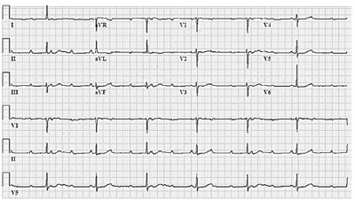
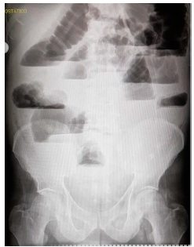
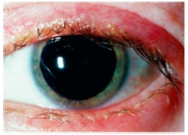
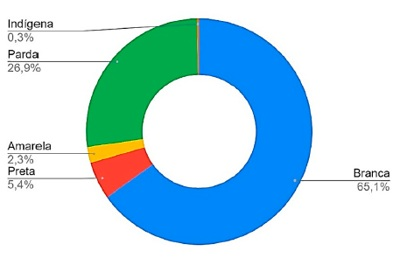
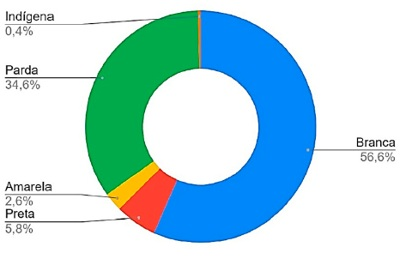
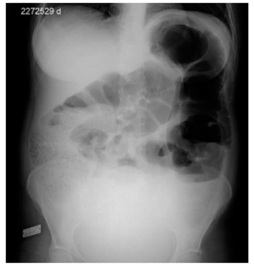

Um paciente de 64 anos foi levado por familiares à unidade de emergência logo após ter apresentado episódio de síncope. Segundo o paciente, ele já tinha apresentado 2 outros episódios nos últimos 3 meses, sempre precedidos por sensação de “tonteiras”, e, eventualmente, tem sentido a impressão de fraqueza, “escurecimento da visão” e sensação de queda iminente. Não há dados relevantes de história patológica pregressa do paciente, que não faz uso de nenhum fármaco regularmente. No exame físico, o paciente apresentava-se bradicárdico (42 batimentos por minuto), normotenso, com ritmo cardíaco regular em 3 tempos (B4), sem sopros. Seu pulso venoso jugular revelou a presença de intermitentes ondas “a em canhão”. Foi realizado um eletrocardiograma, que revelou padrão similar ao ilustrado na figura abaixo. O emergencista que atende esse paciente deverá explicar-lhe que será necessária a realização de

Homem de 75 anos de idade, tabagista 1 maço/dia desde os 20 anos de idade, apresenta queixa de polaciúria, disúria e hematúria macroscópica. Relata diversos episódios de infecção do trato urinário no passado e hiperplasia prostática benigna tratada por ressecção transuretral, com melhora significativa dos sintomas obstrutivos urinários. No toque retal, percebe-se próstata de tamanho aumentado, com superfície regular. Exame de urina tipo I (EAS) evidencia hematúria maciça, com mais de 80% de hemácias isomórficas. Nesse caso, a melhor conduta diagnóstica e o diagnóstico mais provável são, respectivamente
Lactente de 6 meses está sendo atendido na unidade básica de saúde para consulta de puericultura. A criança, nascida com 39 semanas, encontra-se em aleitamento materno exclusivo e com desenvolvimento neuropsicomotor adequado. Sua genitora solicita orientações para iniciar a alimentação complementar. Acerca da introdução alimentar nesse caso, assinale a opção correta.
Adolescente de 14 anos de idade, primípara, em puerpério imediato de parto vaginal, apresenta sangramento vaginal abundante, sem morbidades associadas à gestação. No exame, ela apresentou: regular estado geral, frequência respiratória de 23 incursões por minuto; tempo de enchimento capilar de 6 segundos; frequência cardíaca de 128 batimentos por minuto; pressão arterial de 80 x 30 mmHg; abdome globoso, normotenso; útero contraído abaixo da cicatriz umbilical, sem lesões no canal de parto. Diante do quadro apresentado, assinale a opção que estabelece a conduta apropriada a ser adotada em conjunto com a reanimação.
Uma mulher de 34 anos com diagnóstico de depressão procurou a unidade de saúde da família (UBS) onde você trabalha. Com base no prontuário da paciente, você observou que ela faz acompanhamento na unidade há 10 meses com outro médico da unidade. A paciente consulta sozinha, mas chegou à unidade acompanhada da irmã, com quem ela mora e que está bastante preocupada. A paciente tem sintomas de humor deprimido, fatigabilidade e choro fácil; está em uso de 40 mg/dia de uoxetina nos últimos 6 meses, tendo apresentado discreta melhora. Segundo a paciente, há 1 mês, aproximadamente, começou a ouvir vozes e ver alguns vultos, e tem pensado em se matar, mas sem plano. Nesse caso, qual é a conduta adequada?
Uma paciente de 62 anos de idade foi encaminhada ao ambulatório de nefrologia de um hospital universitário para ajuste no tratamento anti-hipertensivo, em razão de suposta nefropatia hipertensiva estágio 3. A paciente tem hipertensão arterial sistêmica (HAS) há longa data e faz tratamento com hidroclorotiazida 25 mg/dia e anlodipino 10 mg duas vezes ao dia. Recentemente, seus exames de sangue revelaram pequena retenção de escórias nitrogenadas, sendo o cálculo estimado da taxa de ltração glomerular de 54 ml/min/1,73 m². Exame urinário revelou a presença de microalbuminúria (120 mg/g de creatinina em amostra isolada de urina; valor de referência: até 30 mg/g de creatinina na urina). No exame físico, os níveis tensionais se encontravam em 150 x 90 mmHg no membro superior (MS) direito e em 148 x 92 mmHg no MS esquerdo. Considerando-se o risco cardiovascular da paciente, os níveis tensionais observados na consulta e a presença de dano renal crônico em estágio 3 (da classificação KDIGO — do inglês esquema terapêutico em curso, a conduta correta seria
Homem de 55 anos de idade apresenta quadro de dor em fossa ilíaca esquerda. No exame físico, apresentava bom estado geral, frequência cardíaca de 90 batimentos por minuto, pressão arterial de 130 × 80 mmHg, frequência respiratória de 20 incursões respiratórias por minuto e temperatura axilar de 37,9 °C. O paciente realizou tomogra a de abdome e pelve, que mostrou ausência de líquido livre e gás na cavidade peritoneal, discreta distensão de alças de delgado e cólons direito e transverso, espessamento de cólon descendente e abscesso pericolônico de 6 cm próximo à goteira parietocólica esquerda. Nesse caso, qual é a melhor conduta imediata?
Adolescente de 11 anos, sexo masculino, em consulta de rotina com pediatra, refere ser um dos menores alunos da sua sala. O crescimento do paciente nos últimos 6 meses foi de 2,5 cm. A projeção de sua estatura vai ao encontro do canal familiar (pai mede 161 cm e mãe mede 150 cm). No gráfico estatura × idade, situa-se entre o escore-z −2 e −3. Exame físico sem alterações, sem características de doenças gênicas ou cromossômicas, estadiamento puberal de Tanner G2 P1. Conforme radiografia de mão e punho esquerdos, a idade óssea do paciente é de 11 anos. Nesse caso, o paciente apresenta
Mulher de 23 anos de idade procurou o ambulatório de ginecologia, com queixa de aumento da intensidade e duração do uxo menstrual há 8 meses. Nulípara, tem como antecedentes três abortos espontâneos, nos quais não precisou realizar curetagem uterina. No exame físico, não apresentou qualquer alteração. Apresentou os seguintes exames complementares recentes: - Colpocitologia oncológica: alterações celulares benignas reativas ou reparativas. - Ultrassonogra a: volume uterino de 88 cm³. Eco endometrial heterogêneo de 36 mm (normalidade considerada até 15 mm) com lesão hiperecoica de contornos regulares na cavidade uterina. Anexos sem alterações ultrassonográficas. Considerando a história clínica e os exames físico e complementar da paciente, assinale a opção que apresenta a hipótese diagnóstica e a conduta adequada, respectivamente.
Uma mulher de 43 anos compareceu a uma unidade de saúde da família, com queixas de estresse e ansiedade. Informa que iniciou, há 10 semanas, o tratamento com sertralina 50 mg/dia e que, nesse período, apresentou uma melhora discreta dos sintomas. Entretanto, nas últimas 4 semanas, tem tido ataques recorrentes de ansiedade intensa quando precisa sair de casa, o que tem limitado seu desempenho, inclusive para atividades do dia a dia, como ir ao supermercado e buscar os lhos no colégio. Conforme relato dela, no dia desta consulta, teve muita dificuldade para sair de casa. Nesse caso, qual é a conduta adequada?
Uma paciente de 22 anos de idade compareceu à unidade de emergência, com queixa de aparecimento, havia 3 dias, de lesões na cavidade oral e pele. Informou ainda, que as lesões surgiram inicialmente nos ombros, tendo aspecto semelhante a queimadura solar. Posteriormente, estenderam-se para a região proximal dos membros superiores e para os joelhos. Relatou também febre, mal-estar e mialgias. Em sua história patológica pregressa, há menção a epilepsia e asma. A paciente faz uso de hidantoína — introduzida recentemente, em substituição a fenobarbital — e salmeterol/budesonida inalatório. A paciente tem uma irmã com diagnóstico de lúpus eritematoso sistêmico e uma tia em tratamento para pên go foliáceo. Conforme o exame físico, as lesões ocupam menos de 10% da superfície corpórea, sendo as lesões cutâneas caracterizadas predominantemente pela presença de áreas de eritema, com presença de permeio de pápulas edematosas (com centro de tonalidade violácea) e formação de bolhas com desprendimento cutâneo limitado, havendo algumas típicas lesões em alvo. Nos lábios, há crostas hemáticas aderidas a centros de desprendimento mucoso. O médico que atende a paciente, considerando riscos e benefícios para ela, deve explicar-lhe que a abordagem diagnóstica correta para o seu caso, no momento, é
Homem de 33 anos procurou atendimento por dor em cólica, de forte intensidade, em hipocôndrio direito, iniciada havia 3 meses, com irradiação para abdome superior e dorso. Informou que alguns episódios melhoravam com o uso de analgésicos orais. Em diversas ocasiões, havia sido atendido em unidade de emergência, sendo submetido a analgesia intravenosa, devido à intensidade da dor. Relatou, ainda, que as crises dolorosas são associadas a náuseas e vômitos e desencadeadas pela ingestão de alimentos gordurosos. Negou icterícia, colúria e acolia fecal. Apresenta ritmo intestinal e aspecto das fezes normais. No exame físico, estava em bom estado geral, consciente, contactuante, orientado no tempo e no espaço, normocorado, hidratado, anictérico, acianótico, afebril, com frequência cardíaca de 64 batimentos por minuto, frequência respiratória de 16 incursões respiratórias por minuto, pressão arterial de 120 × 80 mmHg, abdome plano, ruídos hidroaéreos presentes e normais, timpânico, ácido, indolor à palpação super cial e profunda, sem sinais de irritação peritoneal, ausência de visceromegalias ou massas, sinal de Murphy negativo. Realizou exames laboratoriais, cujos resultados foram os seguintes. - Hemograma 41,5%; plaquetas = 155.000/mm³; coagulação: TP = 13,3 segundos; RNI = 1,09. - Urina - Bioquímica amilase = 100 UI/L (VR: 20-160); bilirrubina total = 0,8 mg/dL; bilirrubina direta = 0,5 mg/dL; bilirrubina indireta = 0,3 mg/dL. Com base no caso descrito, assinale a opção que apresenta o diagnóstico mais provável e a conduta mais apropriada, respectivamente.
Lactente de 6 meses, sexo masculino, foi levado à unidade básica de saúde, com história de tosse, espirros, obstrução nasal, coriza e febre havia três dias, com evolução de chiado no peito e dispneia. Antecedentes pessoais: dois episódios de rinofaringite desde o nascimento, autolimitados e com boa evolução. A mãe é asmática. No exame físico, o paciente apresentou: frequência respiratória de 56 incursões respiratórias por minuto; tiragem de fúrcula e subcostal; tempo expiratório prolongado e sibilos difusos em moderada quantidade; saturometria de 88% em ar ambiente. Sem alterações no restante do exame físico. Radiografia de tórax evidenciou hiperinsuflação pulmonar. Considerando a situação descrita, assinale a opção que apresenta, respectivamente, o diagnóstico e a conduta adequados.
A dispareunia é um problema comum na saúde da mulher e um distúrbio complexo que muitas vezes é negligenciado. Podendo ser classificado como de profundidade ou de penetração, geralmente leva a di culdades sexuais como falta de desejo e de excitação sexual, resultando em um impacto significativo na saúde física e mental da mulher. Com relação à dispareunia, assinale a opção correta.
Você atende em uma unidade de saúde da família e está em reunião com a equipe multipro ssional, organizando o planejamento de uma atividade de educação popular em saúde que envolverá um café da manhã com os usuários e um bate papo sobre vacinação contra a covid-19. Conforme as habilidades de comunicação (abordagem centrada na pessoa), bem como os atributos derivados da Atenção Primária à Saúde (orientação familiar e comunitária; competência cultural), qual é a melhor opção de atividade a ser desenvolvida pela equipe para enfrentar eventual resistência à vacinação contra a covid-19?
Uma paciente obesa grau III, portadora de síndrome metabólica, compareceu a consulta no ambulatório de endocrinologia do hospital terciário onde faz acompanhamento, queixando-se de mialgias e fraqueza muscular generalizada há 1 semana. Segundo informado pela paciente, o quadro começou alguns dias após ela ter iniciado tratamento com fármaco para baixar seus níveis de triglicerídeos, que continuavam muito elevados a despeito do tratamento previamente em curso com rosuvastatina. Ela informou ter observado também sua urina avermelhada. O exame físico da paciente revelou leve redução de força muscular difusamente, ao passo que os exames laboratoriais, solicitados em caráter de urgência, mostraram elevados níveis séricos (superiores a 10.000 U/L) de CK-total (valor de referência: 30-200 U/L). Exame simples de urina não apresentou hematúria, mas a fita do exame mostrou um falso-positivo para hemoglobinúria. Assinale a opção que indica o fármaco hipolipemiante que foi recentemente introduzido no esquema terapêutico dessa paciente e que provavelmente levou à precipitação do quadro atual.
Homem de 45 anos, sem comorbidades, procurou o prontosocorro por apresentar dor em região anal havia 5 dias, acompanhada por prostração e calafrios. No exame físico, encontrava-se em regular estado geral, consciente, contactuante, corado, hidratado, subfebril (temperatura axilar de 37,5 °C), com frequência cardíaca de 105 batimentos por minuto, frequência respiratória de 20 incursões respiratórias por minuto, pressão arterial de 120 × 80 mmHg. Inspeção da região perianal evidenciou abaulamento à direita, sem ponto de utuação, aumento de temperatura e vermelhidão. Toque retal com dor à palpação em quadrante posterior direito. Com base no quadro apresentado, qual é a conduta mais adequada?
Neonato feminino, de cor branca, com idade gestacional de 35 semanas e 5 dias, pequeno para a idade gestacional (PIG), nascido de parto operatório indicado por diabetes gestacional em descompensação e asma materna, bolsa íntegra, líquido amniótico claro, APGAR 8/9, desenvolveu quadro respiratório de intensidade moderada. Hoje, 3º dia de vida, permanece em ventilação não invasiva, diminuindo-se a concentração de oxigênio de modo progressivo. Hemograma e proteína C reativa normais. Imagem radiológica mostra reti cação de costelas, hiperinsu ação pulmonar moderada com presença de algumas linhas opacificadas em campos pulmonares. Hemocultura negativa. Com base no relato do caso e no provável diagnóstico para esse neonato, além de prematuridade, diabetes gestacional, parto operatório, outro fator de risco que predispõe a referida evolução é
Paciente de 36 anos, G1P0, idade gestacional de 24 semanas, gravidez não planejada, mas bem aceita, compareceu ao pré- natal de alto risco, para consulta. Tem história de gastroplastia para tratamento de obesidade há 10 meses, técnica de bypass gástrico em Y de Roux (RYGB) — na época, pesava 104 kg e media 1,62 m (IMC = 39). Agora, está com 88 kg (IMC = 33). Segundo ela, às vezes, após o almoço, sente mal-estar e tontura. Considerando as informações anteriores, assinale a opção correta.
Trabalhador da construção civil, de 58 anos de idade, em tratamento regular para hipertensão há 12 anos, procurou a unidade básica de saúde (UBS), com queixa de fortes dores musculares. O paciente acredita que as dores musculares tenham relação com o uso de uma nova medicação prescrita na UBS há duas semanas, quando, em uma consulta de rotina, foram constatadas alterações em seus exames laboratoriais. Nesse caso, qual condição clínica, ao ser evidenciada pelos exames laboratoriais, pode justi car a prescrição da medicação?
Um paciente de 55 anos de idade foi atendido no ambulatório de clínica médica de um hospital de média complexidade, com queixa de epigastralgia em queimação, aliviada pela ingestão de alguns alimentos, além de plenitude pós-prandial e certo grau de disfagia. O paciente faz uso de inibidor de bomba de prótons há 4 semanas, sem relatar melhora. No exame físico, não foram observadas alterações dignas de nota. Diante do quadro, foi solicitada investigação por endoscopia digestiva alta, que revelou a presença de pangastrite enantematosa leve a moderada, sem úlceras. Diante da suspeita de gastrite crônica associada ao causal com a bactéria naquele momento?
Tratamento do Câncer do Esôf ago e da Transição Esof agoGástrica Paciente do sexo masculino, de 75 anos, tabagista, com quadro de disfagia progressiva e emagrecimento de 12 kg em 3 meses, atualmente ingerindo apenas alimentos líquidos e pastosos, realizou endoscopia digestiva alta que evidenciou lesão expansiva circunferencial em esôfago médio (localizada a 28 cm dos dentes incisivos), de 5 cm de extensão, estenosante, mas que permitiu passagem do aparelho para o estômago. A biópsia mostrou carcinoma escamoso de esôfago moderadamente diferenciado. Tomografia de estadiamento mostrou múltiplas metástases pulmonares. Em relação à disfagia e ao suporte nutricional desse paciente, qual é a melhor opção terapêutica?
Uma adolescente de 13 anos foi levada pela mãe à unidade básica de saúde, por apresentar desvio na coluna. Segundo informações maternas, a adolescente tem o hábito de usar uma mochila pesada só de um lado do ombro e, com o passar do tempo, tem cado “mais torta”. A mãe informou que, quando jovem, também era assim, mas, em sua opinião, o caso da lha é pior. Negou outras queixas. No exame físico, observou-se assimetria dos ombros, escápula bastante proeminente à direita. O teste de Adams mostrou assimetria da caixa torácica. No caso em questão, a hipótese diagnóstica é de
Revisar: possível letra faltando em enunciado
Uma mulher de 30 anos de idade, G1P1, compareceu à unidade básica de saúde, para realização do exame citopatológico, sem queixas. Na ocasião, o exame ginecológico foi normal. A coleta da citologia oncótica, que mostrou o seguinte resultado: células glandulares atípicas de significado indeterminado (AGC), possivelmente não neoplásicas. O exame anterior, realizado havia 3 anos, não apresentava anormalidades. Nesse caso, a conduta adequada é
Durante o pré-natal de uma primigesta com 18 semanas, o médico da unidade básica de saúde teve acesso ao resultado do VDRL, com titulação de 1:4. A paciente não recordava ter sido diagnosticada com sí lis nem ter feito tratamento contra essa doença. Com base nesse resultado de exame VDRL durante o pré-natal e nos dados da entrevista clínica, assinale a opção correta.
Uma mulher de 24 anos de idade foi atendida no ambulatório de especialidades, com história de fezes amolecidas e dores abdominais em cólicas havia 1 ano, com períodos de melhora e piora. Nos últimos 3 meses, havia perdido 5 kg (seu peso atual é de 65 kg), de forma não intencional, e notou aumento das dores abdominais, tenesmo, urgência e episódios de diarreia com sangue, que às vezes parecia ter pus. Ex-tabagista, negou uso de bebidas alcoólicas, bem como viagens ou uso de antibiótico recentes. Fez uso de antidiarreicos, mas não obteve melhora. No exame físico, apresentava-se emagrecida, hipocorada +/4+, com dor à palpação em hipogástrio e hipocôndrio esquerdo, ruídos hidroaéreos normais, sem sinais de irritação peritoneal, toque retal sem alterações. Colonoscopia indicou achados compatíveis com in amação difusa, que acometiam do reto ao cólon esquerdo, e o seguinte anatomopatológico de biópsias de diversos segmentos: abscessos, rami cação, encurtamento e atro a das criptas; metaplasia das células de Paneth, aumento da celularidade da lâmina própria, plasmocitose basal, agregados linfoides basais e eosinófilos da lâmina própria. Com relação a esse caso, quais devem ser, respectivamente, o diagnóstico e o tratamento inicial?
Homem de 55 anos refere vômitos biliosos, dor abdominal tipo cólica e parada de eliminação de gases e fezes há cerca de 3 horas. Fez cirurgia por úlcera péptica perfurada há 5 anos. Seu exame físico evidencia: cicatriz de incisão mediana xifopubiana, abdome pouco distendido e doloroso à palpação profunda, sem sinais de irritação peritoneal. Não foi possível palpar massas e/ou visceromegalias. A imagem a seguir corresponde à radiografia de abdome desse paciente. Nesse caso, além de reposição hidroeletrolítica, qual é a conduta mais adequada?

Lactente de 23 meses, sexo masculino, encaminhado para ambulatório de referência, tem história de massa abdominal importante percebida durante o banho, de aumento progressivo, há cerca de 2 meses. Seu exame físico evidencia: massa grande e xa, principalmente em anco esquerdo, ultrapassando inclusive a linha média; pressão arterial de 159 × 91 mmHg; nistagmo; ataxia cerebelar; proptose ocular; equimose periorbitária bilateral (“olhos de guaxinim”). A dosagem de ácido vanilmandélico mostra-se dez vezes o valor de referência de normalidade. Nessa situação, o diagnóstico é
Uma mulher de 20 anos de idade, nuligesta, foi encaminhada para o pronto atendimento de um hospital universitário, com quadro de dor pélvica intermitente fazia uma semana. Havia 1 dia, a dor tornou-se mais intensa e constante. No exame físico, a paciente encontrava-se em bom estado geral, afebril, com pressão arterial de 110 × 70 mmHg, apresentando dor acentuada à palpação em fossa ilíaca direita. Os resultados do hemograma e do exame de urina foram normais e do teste de gravidez foi negativo. A ultrassonogra a transvaginal mostrou uma imagem anecoica de 10 cm de diâmetro em ovário direito, com septação interna e sem fluxo ao O quadro clínico apresentado é característico de
Paciente do sexo feminino, 24 anos, trabalha como técnica de enfermagem há um ano e refere surgimento de vesículas, eritema e ssuras nas mãos há seis meses, acompanhado de episódios de prurido. Relata que houve melhora do quadro no seu período de férias. A partir da história clínica dessa paciente, assinale a opção correta.
Paciente de 54 anos, sexo feminino, foi internada para investigação diagnóstica, por apresentar quadro de mal-estar e alucinações. Durante a internação, apresentou quadro de tontura e lipotimia. A paciente é hipertensa e faz uso de losartana 50 mg, duas vezes ao dia, nimodipino 30 mg, 3 vezes ao dia, devido a isquemia cerebral, e propatilnitrato 10 mg, 3 vezes ao dia, devido a angina estável. As anotações de enfermagem mostram que a paciente apresenta vários episódios de hipotensão ao longo do dia. Que medidas deverão ser tomadas para prevenção da queda?
Mulher de 60 anos, assintomática, realizou colonoscopia para rastreio de câncer colorretal. No exame foram encontrados: 2 pólipos em cólon transverso, cada um medindo 0,5 × 0,5 cm; 1 pólipo em cólon descendente, de 2,0 × 1,5 cm; 2 pólipos em cólon ascendente, de 0,5 × 0,5 cm; e 2 pólipos de 1 × 1 cm no reto. Todos eram pediculados e foram removidos completamente durante o exame. O exame histopatológico revelou que se tratava de pólipos adenomatosos tubulares, exceto o pólipo de cólon transverso, diagnosticado como adenoma tubuloviloso. Nesse caso, qual é a melhor conduta para essa paciente?
Recém-nascido do sexo masculino, com 5 dias de vida, foi levado a unidade básica de saúde pela mãe, devido a lesão de pele que iniciou no 2º dia de vida. No exame, ele encontrava-se normotérmico, ativo, reativo, corado, hidratado, anictérico. Estava com frequência cardíaca de 130 batimentos por minuto, ritmo cardíaco regular em 2 tempos, sem sopros. Apresentava frequência respiratória de 30 incursões respiratórias por minuto, eupneico, murmúrio vesicular siológico sem ruídos adventícios. Abdome globoso, normotenso e sem visceromegalias. Genitália masculina típica, testículos tópicos. A pele apresentava vesículas, pápulas e pústulas com 1 a 3 mm de diâmetro, rodeadas por halo eritematoso de 1 a 2 cm, acometendo tórax e abdome, poupadas as palmas das mãos e as plantas dos pés. Considerando-se essa situação, o diagnóstico da dermatose apresentada é
Uma mulher de 70 anos de idade compareceu ao ambulatório de ginecologia, queixando-se de prurido vulvar crônico e queimação local. No exame ginecológico, apresentava apagamento de pequenos lábios, uma área hipocrômica na face interna dos grandes lábios e região perineal, além de uma pequena lesão ulcerada em grande lábio direito, próximo ao clitóris. Assinale a opção que indica a hipótese diagnóstica desse caso e a conduta adequada, respectivamente.
A equipe de uma unidade de saúde da família está organizando atividades educativas para adolescentes da escola mais próxima, devido ao alto número de casos de violência nessa população. Na reunião de planejamento, os membros da equipe discutem diferentes propostas de metodologia para as atividades, que serão compostas por um encontro semanal, durante alguns meses. Para o primeiro encontro, qual das propostas abaixo está de acordo com os princípios da educação popular e saúde (EPS)?
Homem de 69 anos apresenta quadro de bradicinesia, iniciado há 6 meses, com lentidão dos movimentos e di culdade para amarrar sapatos, abotoar roupas, digitar. Ao caminhar, apresenta passos mais curtos e sensação de instabilidade. Concomitantemente, apresenta tremores nas mãos, de repouso, associada a rigidez, além de alteração olfativa, constipação intestinal de 3 dias e alteração do padrão do sono. Nega alterações de memória e cognição. No exame físico, o paciente apresentava bom estado geral, altura 1,80 m, peso de 85 kg, menor expressividade facial, marcha com inclinação anterior lenta e arrastada, pulmões com murmúrio vesicular preservado, coração rítmico em 2 tempos a 80 batimentos por minuto, pressão arterial de 120 × 80 mmHg, abdome plano e sem visceromegalias. No exame neurológico, mostrou: diminuição dos movimentos dos braços, tremores assimétricos das mãos na manobra dos braços estendidos, movimentos alternados com assimetria e lentidão, e hipertonia em roda dentada. Ressonância magnética realizada há 2 semanas constatou: redução da espessura da cerebral compatível para a sua idade. A principal hipótese diagnóstica nesse caso é
Ambulância de suporte básico de vida foi acionada para atender vítima de colisão de automóvel contra motocicleta em autoestrada. Chegando ao local, o socorrista encontrou o motorista da moto, que estava com capacete fechado, em decúbito ventral e imóvel no acostamento. Em relação à estabilização da coluna vertebral da vítima no local do acidente, qual é a melhor ordem de procedimentos a ser adotada?
Recém-nascido prematuro, sexo masculino, com 15 dias de idade gestacional corrigida, foi levado pela mãe ao ambulatório de cirurgia pediátrica, para avaliação de aumento da bolsa escrotal direita, o que piora com o choro. No exame, a criança estava tranquila, ativa e reativa, corada, hidratada, anictérica, com frequência cardíaca de 120 batimentos por minuto, ritmo cardíaco regular em 2 tempos, sem sopros, perfusão capilar < 2 s, frequência respiratória de 30 incursões respiratórias por minuto, eupneico, com murmúrio vesicular siológico. Abdome globoso, normotenso, peristáltico, sem visceromegalias. Bolsa escrotal direita aumentada de tamanho, conteúdo redutível, testículo palpável sem alterações, transiluminação negativa, espessamento do cordão espermático. Bolsa escrotal esquerda sem alterações, testículo palpável. A programação cirúrgica para essa patologia é
Secundigesta de 25 anos de idade foi encaminhada para o pré- natal de alto risco, por história de pré-eclâmpsia grave com 32 semanas de gestação, o que havia motivado uma cesariana de urgência na primeira gestação. Durante a anamnese, ela revelou história de trombose venosa profunda em membro inferior esquerdo aos 19 anos de idade, quando descobriu ter deficiência de antitrombina (homozigótica). Haja vista a história apresentada, qual deverá ser a estratégia farmacológica para essa gestação?
Um homem de 40 anos, funcionário de um saúde da família, devido a uma ferida no antebraço. Relatou que a lesão surgira havia 2 meses, inicialmente como um pequeno “caroço”, que cresceu e ulcerou. Disse, ainda, que, nas últimas três semanas, surgiram novos “caroços” no antebraço. No exame físico, apresentava-se em bom estado geral, afebril, eutró co, com úlcera de aproximadamente 3 cm de diâmetro no antebraço direito. Também no antebraço direito, apresentava 4 nódulos eritematosos distribuídos de forma linear entre a úlcera e a fossa cubital. Apresentava, ainda, linfonodo axilar direito aumentado, de consistência broelástica, levemente doloroso à palpação. Nesse caso, qual é a hipótese diagnóstica mais provável?
Revisar: possível letra faltando em enunciado
Homem de 55 anos está, há 2 meses, com quadro de linfadenopatia cervical e axilar de aumento progressivo, associada a febre recorrente, com temperatura axilar superior a 38 °C, sudorese noturna e perda de peso de 6 kg desde o início das manifestações. Nega doenças preexistentes e uso de medicamentos, mas informa tabagismo há 35 anos, com carga tabágica de 50 anos/maço. No exame, apresentava linfadenomegalia cervical anterior e posterior bilateralmente, axilares bilaterais, com gânglios de 2,5 a 4 cm de diâmetro, consistência endurecida e xos. Sua temperatura axilar no momento é de 38,5 °C. Radiografia de tórax mostra massa mediastinal de cerca de 8 cm de diâmetro. Já foram solicitados hemograma, proteína C reativa, tomografia computadorizada de tórax com contraste. Em relação ao caso clínico apresentado, qual é o diagnóstico provável e qual exame complementar deve ser solicitado ainda?
Paciente de 30 anos, do sexo masculino, foi atendido na emergência, com queixa de prurido nos olhos e lacrimejamento havia dois dias. No exame físico, apresentava hiperemia conjuntival, com as pálpebras edemaciadas e bordas ulceradas e crostosas, conforme a imagem apresentada a seguir. Considerando-se a principal hipótese diagnóstica, qual é o agente etiológico mais comum?

Criança de 4 anos de idade, sexo feminino, foi levada ao prontosocorro (PS) devido a quadro de crise convulsiva tônico- clônica generalizada, iniciada havia aproximadamente 10 minutos, associada a febre. Ao chegar ao PS, a criança encontrava- se no colo do pai, acordada, com temperatura axilar de 37 °C. Na história clínica, a mãe relatou que a crise tinha sido rápida e que ocorreu logo após ela ter administrado à criança medicação para febre, que se encontrava em 38,5 °C. Negou doença neurológica e outros sinais e sintomas. A criança tinha apresentado crise semelhante com 18 meses de idade. As crises eram sempre com febre. A criança cou em observação por 12 horas, sem novas crises, sem alterações metabólicas. A partir do prontuário da família, o plantonista observou que a família estava em vulnerabilidade social e que, havia 2 anos, um filho do casal, de 1 mês de idade, tivera morte súbita. Considerando o acompanhamento dessa família, assinale a opção que explicita um projeto terapêutico adequado ao caso.
Uma mulher de 49 anos procurou uma unidade básica de saúde, com queixa de “caroço na mama esquerda” e saída de secreção esverdeada bilateralmente. No exame, notou-se um nódulo medindo 1,5 cm, indolor, na mama esquerda. As mamas não apresentavam alterações cutâneas ou adenopatia axilar. A paciente foi submetida a cirurgia com ressecção do tumor, cujo laudo histopatológico indicou carcinoma intraductal in ltrante, com 2 linfonodos sentinelas acometidos e receptores hormonais (progesterona e estrogênio) positivos. Assinale a opção que corresponde ao fator que demonstra o pior prognóstico para o quadro dessa paciente.
As guras 1 e 2, a seguir, foram extraídas de um boletim epidemiológico do Ministério da Saúde publicado em 20 de abril de 2020, no início da pandemia de covid-19 no Brasil. Figura 1: Hospitalizações por síndrome respiratória aguda grave (SRAG) por covid-19 segundo raça/etnia*. Brasil, 2020. Figura 2: Óbitos por síndrome respiratória aguda grave (SRAG) por covid-19 segundo raça/etnia*. Brasil, 2020. Fonte: Ministério da Saúde. br/coronavirus/boletins-epidemiologicos/boletimepidemiologico- covid-19-no-13.pdf/view. Acesso em 06 de maio de 2022. Conforme os dados dos gráficos apresentados, assinale a opção correta acerca da raça/etnia de pessoas com SRAG por covid-19, naquele momento da pandemia.


Paciente masculino, de 72 anos, em tratamento de câncer de próstata, procurou atendimento em ambulatório de oncologia, referindo dor em membro inferior esquerdo havia um dia, mais intensa à dorsi exão do pé, edema de panturrilha esquerda progressivo para todo o membro, com pulso palpável e aumento de sensibilidade à palpação de todo o membro. Nesse caso, considerando-se a chance de confirmar a hipótese diagnóstica mais provável, qual é a melhor opção de exame complementar?
Paciente de 40 anos de idade, sexo masculino, com história de disfagia e tosse não produtiva, predominantemente noturna, procurou atendimento em unidade básica de saúde. Referiu dor torácica, pirose retroesternal e dispepsia. Negou etilismo ou tabagismo. Havia iniciado tratamento empírico com omeprazol 20 mg, 2 vezes ao dia, por 8 semanas, mas obteve pouca melhora. Nesse caso, qual é a medida propedêutica subsequente adequada?
Lactente do sexo masculino, de 1 ano, foi levado à unidade básica de saúde pela mãe, para consulta de puericultura, sem queixas atuais. Nesse tipo de acompanhamento, é primordial a orientação para prevenção de acidentes, evitando-se, assim, agravos externos que coloquem em risco a saúde infantil. As orientações devem incluir os acidentes predominantes nessa faixa etária, que acontecem por
Mulher de 35 anos fez contato com seu ginecologista habitual, via aplicativo de mensagens, solicitando orientações sobre como usar a “pílula do dia seguinte”. Ela referiu estar em outro estado, sem condições de realizar uma consulta médica, e relatou ter tido um coito desprotegido havia 10 horas. Considerando-se o Código de Ética Médica brasileiro, qual deverá ser a conduta mais apropriada do ginecologista nessa situação?
Uma mulher previamente hígida, de 72 anos, compareceu a unidade básica de saúde, apresentando pressão arterial (PA) de 162 × 90 mmHg, já confirmada em outras duas medidas. Não apresentava sintomas nem comorbidades. A melhor opção terapêutica e a meta de PA para essa paciente são, respectivamente
Paciente do sexo masculino, de 76 anos, pardo, tabagista 40 anos/maço, foi internado em um hospital de atenção secundária, por apresentar tosse com escarro purulento e raios de sangue, temperatura axilar de 38 °C, dor torácica e rouquidão. O paciente relatou que esta era a sua segunda internação por essas manifestações nos últimos três meses, tendo o episódio anterior melhorado com uso de amoxicilina-clavulanato, mas evoluído com hiporexia, astenia e perda de peso no mesmo período. As manifestações atuais se iniciaram havia dois dias. No exame do tórax, o paciente apresentava à ausculta murmúrio vesicular abolido em hemitórax direito e, à percussão, macicez em base de hemitórax direito e hipersonoridade logo acima da área de macicez. No caso desse paciente, as hipóteses diagnósticas a serem cogitadas são
Paciente de 40 anos de idade, sexo masculino, compareceu ao pronto-socorro com história de tosse produtiva e expectoração mucopurulenta, de coloração “esverdeada”, dor ventilatória-dependente em hemitórax direito, taquidispneia e febre alta, constante, havia 1 semana. Realizou exame radiográ co de tórax, em incidências posteroanterior e Laurell, com imagem radiopaca de consolidação em lobo pulmonar médio e derrame pleural à direita. Nessa situação, qual é a conduta subsequente adequada para esse paciente?
Revisar: possível letra faltando em enunciado
Lactente hígido de 12 meses foi levado pela mãe a consulta de rotina. No exame físico, não foi identi cada a cicatriz da vacina BCG. Foi conferido o cartão vacinal e constatado que a vacina tinha sido administrada com 20 dias de vida. Nesse caso, a conduta mais apropriada é
Secundigesta de 25 anos de idade procurou a clínica da família para iniciar seu pré-natal na 16ª semana de gestação. Referiu ter tido um parto pré-termo anterior, na 21ª semana de gestação. Trouxe consigo uma ultrassonogra a transvaginal, que mostrou colo do útero de 43 mm de comprimento. Qual é a conduta mais efetiva a ser proposta nesse momento, a m de reduzir a ocorrência de uma nova perda gestacional nessa paciente?
Em uma unidade do polo indígena onde, até o momento, não havia noti cação de casos autóctones de arboviroses, um agente de combate a endemias (ACE) conduziu, para atendimento médico, um homem de 38 anos, hipertenso, com história de febre (38 °C), dores no corpo, cefaleia e ageusia havia 5 dias. Esse homem estava com pressão arterial de 120 × 80 mmHg, frequência cardíaca de 72 batimentos por minuto e frequência respiratória de 18 incursões respiratórias por minuto. A prova do laço resultou positiva. Nesse caso, a hipótese diagnóstica e a conduta a ser realizada são, respectivamente
Um homem de 65 anos compareceu a unidade de pronto atendimento, por apresentar dispneia, tosse e febre de 38,6 °C com início há 48 horas. Sua frequência respiratória está em 26 incursões respiratórias por minuto e sua saturação de O2 é de 88% em ar ambiente. No exame do tórax, o paciente apresentou expansão torácica, sons respiratórios e frêmito toracovocal diminuídos à esquerda, além de macicez à percussão na porção inferior de hemitórax esquerdo. Espera-se encontrar o seguinte resultado na radiografia de tórax desse paciente:
Homem de 35 anos, pedreiro, foi levado ao pronto-socorro municipal por socorristas, os quais informaram que o paciente havia sofrido queimadura enquanto realizava um trabalho de manutenção na própria casa. O socorro fora acionado pela família, que tinha ouvido o ruído da queda do homem no chão da laje. Aparentemente, ele encostou em um o elétrico, tendo lesão de entrada no ombro direito e de saída no pé esquerdo. Os socorristas o encontraram desacordado, mas ele recuperou a consciência no trajeto ao hospital. Não se lembrava do ocorrido, mas respondia sobre sua identi cação e condições de saúde antes do evento. Referia muita dor na região lateral direita do tórax e na hemiface direita. Considerando o caso apresentado, assinale a opção correta.
Recém-nascido com 36 h de vida é avaliado por médico assistente em maternidade pública municipal. No momento, mostra-se ativo, rosado e mamando ativamente o seio materno. Gestação e parto ocorreram sem intercorrências. Exame clínico cardiovascular normal no momento. O médico pediu autorização da família para a realização do teste de oximetria (coraçãozinho), explicando sua importância para a detecção precoce de cardiopatias congênitas críticas. O exame evidenciou valores de saturação de 99% em membro superior direito e 95% em membro inferior direito. Considerando-se os achados do teste descrito, a conduta adequada a ser seguida pelo médico assistente, além de fornecer as orientações gerais à mãe, é
A síndrome do ovário policístico (SOP), caracterizada pela anovulação frequente, causa alterações menstruais importantes e quadros de infertilidade. Acerca dessa síndrome, assinale a opção correta.
Joana, branca, 36 anos, G2P1A0, passou pelo acolhimento da unidade básica de saúde um dia após ter descoberto que estava grávida. Logo depois do acolhimento, o enfermeiro realizou os devidos testes rápidos para diagnóstico de infecções sexualmente transmissíveis. Todos tiveram o resultado não reagente. Apesar disso, Joana possui critérios que podem indicar o seu encaminhamento para o pré-natal de alto risco. Qual das alternativas corresponde a esses critérios?
Paciente do sexo feminino, de 23 anos, foi encaminhada para serviço ambulatorial especializado após ter sido estabilizada em atendimento de urgência em internação ocasionada por fraqueza generalizada e lipotimia. Durante a avaliação clínica na urgência, foi constatado que a paciente apresentava hipertro a de glândulas parótidas, dentes em regular estado de conservação e sinal de Russel nas mãos. Na consulta ambulatorial, foi verificado que a paciente atendia aos critérios do diagnóstico de bulimia nervosa, por apresentar episódios recorrentes de compulsão alimentar, seguidos de comportamentos compensatórios e inapropriados para evitar o ganho de peso (no caso, autoindução de vômitos). Como proposta terapêutica não farmacológica, foi planejada a terapia cognitiva comportamental, em 20 sessões em grupo, durante 5 meses. Em relação à proposta de terapêutica farmacológica para essa paciente, é correto afirmar que,
Homem de 35 anos vítima de acidente automobilístico foi inicialmente atendido em unidade de pronto atendimento e, em seguida, levado pelo serviço de atendimento móvel de urgência ao hospital. No exame físico, apresentava-se com Glasgow 15; frequência cardíaca de 120 batimentos por minuto; frequência respiratória de 24 incursões respiratórias por minuto; pressão arterial de 110 × 70 mmHg; saturação de O2 de 94% em ar ambiente; glicemia capilar de 80 mg/dL; murmúrio vesicular presente bilateralmente, sem ruídos adventícios; ritmo cardíaco regular com bulhas normofonéticas em 2 tempos; abdome sem alterações; força muscular em membros superiores direito e esquerdo grau 4/5, sensibilidade preservada em membros superiores, força grau 0/5 em membro inferior direito e grau 1/5 em membro inferior esquerdo, com sensibilidade de membros inferiores diminuída, reflexos patelar, aquileu e bicipital presentes e simétricos. Assinale a opção que indica o exame complementar inicial a ser solicitado nesse caso.
Recém-nascido de 36 semanas de idade gestacional encontra- se em alojamento conjunto de maternidade municipal, em companhia de sua mãe. Médico assistente veri cou que o bebê é lho de mãe diabética, possui dois irmãos saudáveis e o parto foi cesariano. O peso ao nascimento foi 2,5 kg. O tipo sanguíneo da mãe é A negativo, e o da criança, A positivo. No exame, o recém-nascido mostrou-se ativo, mamando, e corado. Icterícia presente até a zona 2. Exames cardiovascular, respiratório e segmentar normais para a idade. O médico solicitou dosagem de bilirrubina total e o valor encontrado, às 18 horas de vida do recém-nascido, foi de 12 mg/dL. Nesse caso, visando-se evitar a principal complicação advinda da condição descrita, a conduta recomendada pela Sociedade Brasileira de Pediatria é
Conceitos f undamentais óbito materno óbito por causa materna causas obstétricas diretas e causas obstétricas indiretas Puérpera de 40 anos de idade, no 1º dia após cesariana, apresentou insu ciência respiratória aguda grave com queda na saturação secundária à covid-19. Foi entubada na unidade de terapia intensiva, por covid-19, e evoluiu para óbito 72 h após a entubação. Como se classifica essa morte materna?
Primigesta de 24 anos, vendedora, compareceu a unidade de saúde da família (USF) com os resultados de exames solicitados na primeira consulta de pré-natal, realizada havia quatro semanas, ao nal do primeiro trimestre de gestação. Estava com idade gestacional de 16 semanas. Negou queixas e referiu estar em uso regular do ácido fólico e do sulfato ferroso prescritos. Disse estar preocupada com o resultado do exame de toxoplasmose. O médico veri cou que a gestante apresentava IgG reagente e IgM não reagente para toxoplasmose. Assinale a opção que indica, respectivamente, o que o exame sugere e a conduta a ser tomada.
Paciente do sexo feminino, de 22 anos, estudante de medicina, foi levada à emergência hospitalar pelos pais, que a encontraram desacordada ao lado de cartelas vazias de clonazepam. A estudante faz acompanhamento em serviço de psiquiatria da universidade, mas os pais desconhecem diagnóstico psiquiátrico. No exame físico, a paciente encontrava-se com intensa sonolência e relaxamento muscular, diminuição dos reflexos e confusão mental. No atendimento inicial dessa paciente, deve-se
Mulher de 69 anos foi atendida com queixa de dor abdominal em cólica havia 3 dias, acompanhada de distensão, náuseas, hiporexia e parada de eliminação de atos e fezes. Relatou que, havia cinco meses, apresentava emagrecimento e episódios de dores abdominais, associados a obstipação intestinal. Tem antecedente de hipertensão arterial sistêmica e está em uso de losartana 50 mg/dia. No exame físico, apresentava-se consciente, contactuante, descorada ++/4, desidratada +/4, abdome distendido, globoso, hipertimpânico em andar superior, levemente doloroso, com massa palpável em hipogástrio, descompressão brusca negativa. Realizou exames laboratoriais e radiogra a de abdome, cuja imagem é apresentada a seguir. Considerando as informações desse caso e a imagem anterior, assinale a opção que indica corretamente o diagnóstico e o achado de imagem, respectivamente.

Lactente de 40 dias de vida apresenta quadro de vômitos há cerca de 15 dias. Segundo relato da mãe, os vômitos são em jato, não biliosos e ocorrem sempre após as mamadas. O lactente tem ganhado pouco peso desde o nascimento e mostra- se irritado. Gestação sem intercorrências, exceto por tabagismo materno. No exame físico, o lactente encontra-se desidratado 1+/4+ e emagrecido. Aparelho respiratório e ausculta cardíaca sem anormalidades. Abdome evidencia distensão do andar superior, peristalse aumentada e oliva palpável. Considerando a principal hipótese diagnóstica para o caso descrito, assinale a opção que contém o exame de primeira escolha para confirmação diagnóstica, a ser realizado no abdome.
Equipe multipro ssional de uma unidade de saúde da família deseja criar um grupo de mensagens eletrônicas para a discussão de casos clínicos que envolvam diagnósticos e tratamentos dos pacientes atendidos nessa unidade de saúde, sem revelar dados pessoais deles. Com base no Código de Ética Médica, assinale a opção correta.
Ao orientar uma paciente sobre a importância do preventivo de câncer de colo de útero, um pro ssional de enfermagem enfatizou que, conforme orientações do Ministério da Saúde, esse exame deve ser realizado por todas as mulheres com vida sexual ativa que se encontrem em determinado intervalo de idade. Essa mesma paciente apresentou seu exame, cujo resultado acusou infecção pelo HPV ou lesão de baixo grau. Considerando o caso, assinale a opção que indica, respectivamente, o intervalo de idade recomendado pelo Manual do Ministério da Saúde para coleta do exame preventivo e a orientação que deve ser dada para a paciente em questão.
Paciente de 72 anos, com diagnóstico recente (e já em início de tratamento) de adenocarcinoma ductal in ltrante de mama, retornou ao ambulatório de clínica médica, com queixa de “inchaço”. Ela informou que tem acordado com edema palpebral bilateral e edema em membros inferiores, predominantemente vespertino. Negou dispneia. Referiu urina espumosa. Em sua história patológica pregressa, há relato de hipertensão arterial sistêmica, estando ela em tratamento com anlodipino e atenolol. No exame, a paciente mostrava-se levemente hipocorada, apresentando edema peripalpebral bilateral e edema de membros inferiores (3+/4+); sua pressão arterial se encontrava em 140 × 88 mmHg. Exames complementares solicitados revelaram dislipidemia (hipercolesterolemia às custas de LDL-colesterol), hipoalbuminemia (2,4 g/dL) e proteína na urina de 24 horas no valor de 4,2 g (valor de referência < 0,15 g). A hipótese diagnóstica mais provável para a queixa atual da paciente é
Em atendimento em unidade de saúde da família, você atende pela primeira vez uma mulher, com 32 anos, parda, mãe de dois lhos. Ela se encontra assintomática e realizou exames laboratoriais de hemograma colesterol total e frações, glicemia e per l hormonal tireoidiano, que resultaram normais. Mostrou, ainda, um ultrassom cervical recente, que evidencia um nódulo sólido, no 1/3 superior do lobo direito da tireoide, com 1 cm, espongiforme, sem calci cações, mais largo que alto e de limites precisos. Seu exame físico confirmou os achados ultrassonográficos. Nesse caso, a conduta mais apropriada é
Lactente de 30 dias, portadora de síndrome de Down, apresenta sucção fraca e di culdade de ganho de peso. Ela necessita ser encaminhada para acompanhamento de equipe multidisciplinar. Nessa situação, a orientação inicial a ser dada à mãe é
Primigesta de 17 anos de idade, na 32ª semana de gestação, com quadro de pré-eclâmpsia leve, foi encaminhada do ambulatório de pré-natal de alto risco diretamente para a maternidade. Qual situação clínica determinou acertadamente essa conduta?
Uma equipe de saúde (ES) de um distrito sanitário especial indígena (DSEI) realizou uma análise situacional de saúde da população adstrita e identi cou um problema de alcoolismo na população masculina. A equipe planeja, junto com os líderes locais, uma intervenção comunitária para enfrentar esse problema de saúde, respeitando o contexto intercultural local. Conforme a Política Nacional de Atenção à Saúde dos Povos Indígenas, qual das seguintes propostas deve ser adotada pela ES para desenvolver a intervenção?
Paciente de 64 anos, sexo masculino, diabético tipo 2 há 22 anos, com adesão insatisfatória ao plano de cuidados, foi internado em hospital de cuidados terciários, com quadro clínico compatível com uremia (sonolência, anorexia, náuseas, vômitos e soluços). Exames laboratoriais confirmaram importante retenção azotada, acidose metabólica, hipercalemia moderada, hipocalcemia e hiperfosfatemia. Em função do estado urêmico, sua doença renal crônica foi abordada com a realização de hemodiálise (HD) convencional, tendo sido providenciada a punção de veia jugular interna direita, por onde foi posicionado um cateter venoso central de duplo lúmen. Logo nos primeiros minutos após iniciada a HD, o paciente passou a apresentar quadro de hipotensão arterial, A explicação mais adequada para o quadro apresentado no início da sessão de HD é
Paciente de 31 anos, sexo masculino, solteiro, queixa-se de aumento do volume do testículo direito, indolor, associado a sensação de “caroço” endurecido, há seis meses. Conforme ultrassom de região escrotal trazido pelo paciente, identi ca- se lesão de aproximadamente 2 cm, com bordas irregulares e de aspecto heterogêneo, com calcificações numerosas. Nesse caso, qual é a principal hipótese diagnóstica?
Revisar: possível letra faltando em enunciado
Recém-nascido de 4 horas de vida foi levado ao pronto-socorro por equipe do serviço de atendimento móvel de urgência após parto domiciliar de paciente sem histórico de realização de prénatal. Foram prestados os primeiros atendimentos à mãe e ao bebê. Teste rápido da mãe para HIV, hepatite B e hepatite C resultaram negativos, mas, para sí lis, o resultado foi positivo. Coletado, então, teste não treponêmico, o VDRL da mãe foi de 1:8, e o da criança VDRL resultou não reagente. O recém-nascido fez os exames de hemograma completo, glicemia e radiogra a de ossos longos e liquor, além de exame físico; todos resultaram normais. Nesse caso, a conduta adequada para a mãe é
Gestante de 39 anos de idade, com histórico de três cesarianas prévias, irá realizar uma cesariana eletiva por iteratividade, com 39 semanas de gestação. Ao ser internada na maternidade para realizar o procedimento, ela apresentou cultura positiva para a anamnese, a paciente relatou ser alérgica a penicilina benzatina. Diante das informações apresentadas, qual é a melhor conduta a ser adotada?
A Política Nacional de Atenção Integral à Saúde das Pessoas Privadas de Liberdade no Sistema Prisional (PNAISP) segue os atributos e as competências da Atenção Primária à Saúde na perspectiva de promoção da saúde, prevenção de agravos, tratamento e seguimento, entre outros. A respeito dessa política, assinale a opção correta.
Homem de 63 anos, portador de hipertensão arterial sistêmica e diabetes hipertensiva e brilação atrial paroxística, foi levado por familiares a uma unidade de emergência, com quadro neurológico de instalação abrupta havia cerca de 2 horas. Segundo informaram seus familiares, o paciente tinha começado a “falar embolado” e mostrava di culdade para movimentar o membro superior direito, tendo evoluído para progressivo rebaixamento do nível de consciência, o que motivou a família a levá-lo para a unidade. Não houve interrupção da administração de fármacos de uso crônico (valsartana, amlodipina e amiodarona). No exame físico, o paciente estava em coma super cial, exibindo evidente hemiparesia de predomínio braquiofacial direito. Sua pressão arterial (ambos membros superiores) era de 160 × 100 mmHg, sendo o ritmo cardíaco irregular, em 2 tempos, com bulhas normofonéticas e sem sopros. A glicemia capilar era de 320 mg/dL, enquanto o eletrocardiograma revelou apenas ritmo de brilação atrial com resposta ventricular inferior a 110 batimentos por minuto. Uma tomogra a computadorizada de crânio, laudada em 45 minutos após sua chegada à unidade, mostrou-se sem anormalidades aparentes. Visando-se ao melhor prognóstico do paciente, com menores limitações neurológicas funcionais futuras, a estratégia terapêutica que deve ser instituída imediatamente é
Paciente de 83 anos, sexo masculino, diabético, cardiopata grave e dislipidêmico, sofreu infarto agudo do miocárdio há 5 anos, tendo sido tratado com colocação de 2 Sua família pergunta da possibilidade de realizar rastreamento para câncer de próstata no paciente. Conforme as recomendações do Ministério da Saúde, a conduta mais adequada no caso é
Adolescente de 13 anos, sexo masculino, em seguimento na unidade básica de saúde desde os 3 anos, com diagnóstico de diabetes últimos três meses por cetoacidose diabética. Durante a consulta, o paciente referiu que não faria uso das medicações, pois os remédios o “deixam gordo” e ele estava “cansado de tomar picada”, desprezando a dose após a manipulação dela. Preocupado, o médico informou ao adolescente que seria obrigado a comunicar o fato à mãe, enfrentando, com isso, grande descontentamento do paciente. No que diz respeito ao Código de Ética Médica, o médico
Mulher de 36 anos de idade, G3P3A0 (3 partos vaginais), compareceu a consulta no centro de saúde, para renovar receita de anticoncepcional injetável mensal. Faz uso do método contraceptivo há 5 anos, com boa adaptação, e não deseja nova gestação. É tabagista, fuma 20 cigarros por dia, e é etilista social. Tem parceiro único há 10 anos. Nega uso de preservativo nas relações sexuais. Diante das informações, qual é a orientação de método anticoncepcional mais adequado para essa paciente?
A Agência Nacional de Saúde Suplementar (ANS), vinculada ao Ministério da Saúde, é uma autarquia que regula, normatiza, controla e scaliza os planos de saúde. Em novembro de 2021, foi aprovada a Política Nacional de Saúde Suplementar para o enfrentamento da covid-19 (PNSS-Covid-19). Uma das diretrizes dessa política é
Mulher de 30 anos foi a consulta em ambulatório de clínica médica devido a artrite nas mãos, nos joelhos e nos tornozelos. Relatou que o quadro iniciou havia 4 meses, de forma súbita, com febre (até 38,5 °C), exantema difuso levemente pruriginoso, eritema conjuntival e poliartralgia. Relatou que todos os sintomas duraram cerca de 3 a 5 dias, havendo persistência apenas da dor articular. Desde então, tem feito uso de analgésico comum e/ou anti-inflamatório não hormonal, devido às dores articulares persistentes. O exame físico mostrou-se completamente normal, exceto por artrite na segunda e na terceira metacarpofalangeana à esquerda, na terceira e na quarta interfalangeana proximal da mão direita, nos joelhos e nos tornozelos. Assinale a opção que apresenta, respectivamente, a correta hipótese diagnóstica para o caso e a opção terapêutica adequada.
Mulher de 25 anos apresentou edema, rubor e dor na pálpebra superior direita, com resolução espontânea do quadro em 48 horas. No momento, apresenta nodulação de 0,3 cm, indolor, localizada na face interna do terço médio da pálpebra superior direita. Nega febre ou qualquer outro sintoma. Nesse caso, qual é o diagnóstico mais provável?
Pré-escolar de três anos de idade, sexo masculino, previamente hígido, foi levado à emergência, apresentando agitação psicomotora, midríase, boca seca e rubor facial. A mãe dele informou que tinha percebido os sintomas havia uma hora, ao chegar do trabalho. O menor ca em casa com a irmã, de 10 anos, durante o período da tarde, até a mãe retornar do trabalho. Conforme o quadro clínico apresentado, trata-se de intoxicação por
Revisar: possível letra faltando em enunciado
Tercigesta, com ambas as gravidezes anteriores acometidas por pré-eclâmpsia, apresenta restrição de crescimento fetal intrauterino por insu ciência placentária. Encontra-se na 35ª semana de gestação, com dopplervelocimetria da artéria umbilical com diástole zero, mas com duto venoso normal. Qual é a conduta obstétrica indicada para essa paciente?
A equipe de uma unidade de saúde da família está organizando atividades educativas com a comunidade sobre métodos contraceptivos e planejamento familiar. Com relação aos direitos reprodutivos e sexuais na Atenção Primária à Saúde (APS), assinale a opção correta.
Homem de 75 anos foi levado ao serviço de urgência devido a confusão mental. Os familiares relataram que o homem é diabético (em uso de metformina 500 mg 2 vezes ao dia) e tabagista (1 maço a cada 2 dias). Informaram que ele está no quarto dia de pós-operatório de colecistectomia por via laparoscópica e recebera alta no segundo dia de pós-operatório, evoluindo bem. Contudo, ontem, tinha apresentado episódio de confusão mental, trocando os nomes dos lhos e esquecendo se havia jantado ou não. Hoje, pela manhã, apresentou quadro semelhante de confusão mental, relatando já ter tomado o café da manhã, mesmo sem tê-lo feito. No exame, apresenta-se consciente, com pontuação de 14 na Escala de Coma de Glasgow. Sua temperatura é de 38,6 °C, pulso de 120 batimentos por minuto, 26 incursões respiratórias por minuto, saturação de O₂ de 93% com cateter nasal de oxigênio. Na ausculta pulmonar, apresentou crepitações em base direita. Sua pressão arterial é de 96 × 60 mmHg. Sem alterações na ausculta cardíaca. Abdome normotenso, indolor, sem visceromegalias, com ferida cirúrgica em bom estado, sem secreção purulenta. No caso apresentado, a conduta a ser adotada é
Mulher de 47 anos procurou atendimento por quadro de dor e abaulamento irredutível em região inguinal direita havia 2 dias, associado a vômitos, distensão abdominal e parada de eliminação de gases. No exame físico, o abdome encontrava-se distendido, com cicatriz cirúrgica subcostal à direita, abaulamento abaixo do ligamento inguinal à direita, irredutível, sem sinais ogísticos, ruídos hidroaéreos diminuídos, hipertimpânico, dor à palpação super cial e profunda generalizada, descompressão brusca negativa, toque retal com presença de fezes em ampola. No caso apresentado, o diagnóstico mais provável é abdome agudo obstrutivo por hérnia
Pré-escolar de 3 anos e 4 meses de idade deu entrada no pronto-socorro apresentando rigidez e espasmos musculares e hipertermia. Não apresentava di culdade respiratória. Ausculta cardíaca sem anormalidades. Sem história prévia de doença cardíaca. O paciente estava recebendo oxigenoterapia quando um primo dele, de quatro anos, deu entrada no mesmo hospital, com quadro semelhante. Ambos haviam passado as últimas 12 horas na casa da avó materna, que há anos faz tratamento de esquizofrenia e hipertensão arterial. As evidências clínicas dessa história induzem a necessidade de o médico investigar
Paciente de 30 anos, com 25 semanas de gestação, portadora de diabetes natal de alto risco, com queixa de corrimento vaginal com prurido e ardência. Relatou também dispareunia de introito vaginal e disúria. No exame, confirmou-se a presença de eritema e ssuras vulvares, corrimento grumoso, com placas aderidas à parede vaginal, de cor branca, edema vulvar e escoriações. Desde o início da gestação, a paciente já tinha tratado 4 vezes os mesmos sintomas. Qual é o tratamento a ser proposto para a paciente?
Lista Nacional de Notif icação Compulsória de doenças agravos e eventos de saúde pública Mulher de 45 anos compareceu a consulta médica em unidade de saúde da família (USF), solicitando prescrição de clonazepam (por sugestão de uma vizinha), pois não consegue dormir. É casada e refere que seu marido é uma pessoa complicada, pois não deixa ela trabalhar, reclama de tudo o que ela faz, grita com ela e a critica muito. Ela nega que ele já a tenha agredido fisicamente, mas se sente humilhada e tem medo dele. O plano de cuidado dessa paciente deve incluir
Mulher de 32 anos, professora de educação básica, procurou assistência médica, com queixas de dores generalizadas pelo corpo e di culdade para dormir. Não faz uso de nenhum medicamento para doenças crônicas. Encontra-se de licença médica há 6 meses e ainda não obteve grande melhora. Refere que acorda exausta. Nega febre. Diz já ter sido muito ativa, trabalhado em 4 escolas ao mesmo tempo, entretanto tem medo de retornar ao trabalho e voltar a ter dores mais fortes. O exame físico mostrou-se normal, à exceção da dor à pressão em diversos grupamentos musculares em todo o corpo, sem sinal de bloqueio articular ou de in amação articular. Foram realizados alguns exames laboratoriais, que resultaram normais, incluídos TSH, VHS e proteína C reativa ultrassensível. Provavelmente, trata-se de
Paciente de 30 anos, sexo feminino, foi submetida a punção de veia jugular interna direita para início de nutrição parenteral hospitalar, em primeira tentativa, sem intercorrências. Foi acoplado o equipo com frasco de SF 0,9% 500 ml. O teste do retorno sanguíneo foi positivo. Percebeu-se, então, fluxo ascendente da coluna de sangue dentro do equipo. Nessa situação, qual deve ser a conduta subsequente?
Pré-escolar de três anos de idade foi admitido na emergência, com quadro de edema e oligúria havia cinco dias. Exame físico: pressão arterial de 80 × 60 mmHg; edema palpebral e de membros inferiores. Exame de urina: densidade urinária = 1.015; hemácias = 3/campo; proteinúria = 3+/4+; piócitos = 4/campo. Considerando-se a principal hipótese diagnóstica, o tratamento medicamentoso indicado é
Mulher com 20 semanas de gestação foi diagnosticada com sí lis, sendo ela e o parceiro adequadamente tratados com penicilina benzatina. Depois de terminado o tratamento inicial, o controle mensal de cura dessa paciente, na Atenção Primária à Saúde, exige seguimento com
Criança de 5 anos foi levada por familiar para consulta na unidade básica de saúde, com quadro de febre não aferida havia 3 dias, odinofagia e recusa alimentar. No exame físico, observou-se presença de lesões vesiculares na mucosa bucal e na língua, além de erupções papulovesiculares localizadas em regiões palmares e plantares bilateralmente. Considerando-se como principal hipótese diagnóstica a síndrome mão-pé-boca, qual é a conduta correta?